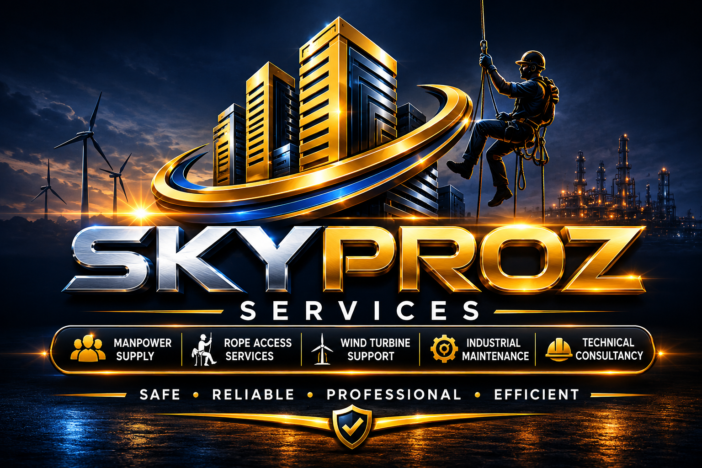

Rope Access Services
Safe, efficient access for inspections, cleaning, maintenance, coatings, installations, and repairs at height.
- Structural inspection
- Facade cleaning
- Painting and coatings
Safe access. Reliable execution.
Professional rope access, industrial maintenance, wind turbine support, manpower supply, and technical consultancy across India.

Our capabilities
We help businesses reach difficult locations, maintain critical assets, and complete complex work with less downtime.
Safe, efficient access for inspections, cleaning, maintenance, coatings, installations, and repairs at height.
Dependable support for plants, steel structures, shutdowns, equipment installation, and safety operations.
Specialist access and maintenance support that keeps wind assets clean, inspected, and productive.
Inspection and maintenance solutions for ships, tanks, hulls, and offshore structures.
Skilled personnel and safety-focused teams matched to your operational and project requirements.
Practical guidance for safer access planning, maintenance strategy, and efficient project delivery.
Business opportunities
Discover public and private contract opportunities, save searches, track deadlines, create alerts, and turn tender notices into practical bid plans.
Always verify eligibility, scope, deadlines, and submission requirements with the original procurement source.About Skyproz
Skyproz Services provides safe, efficient, and cost-effective solutions for industrial, marine, offshore, commercial, and wind energy sectors. Our trained technicians work where conventional access is costly or impractical.
Discuss your project →Safety is our priority
From access planning to final inspection, our approach is designed to protect people, assets, and operations while delivering consistent results.
Understand the site, risks, scope, and operational requirements.
Prepare the access method, team, equipment, and safety controls.
Complete the work efficiently with disciplined supervision.
Inspect the outcome and provide clear completion reporting.
Start a conversation
Tell us what you need. Our team will help identify a safe and cost-effective way forward.
A.P. Antony Square, 13-41, Chappara Junction, Kodungallur, Kerala 680663